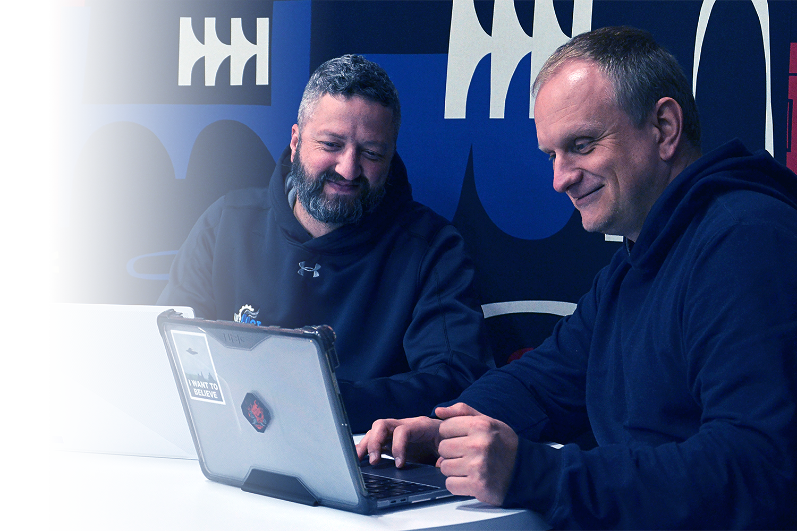
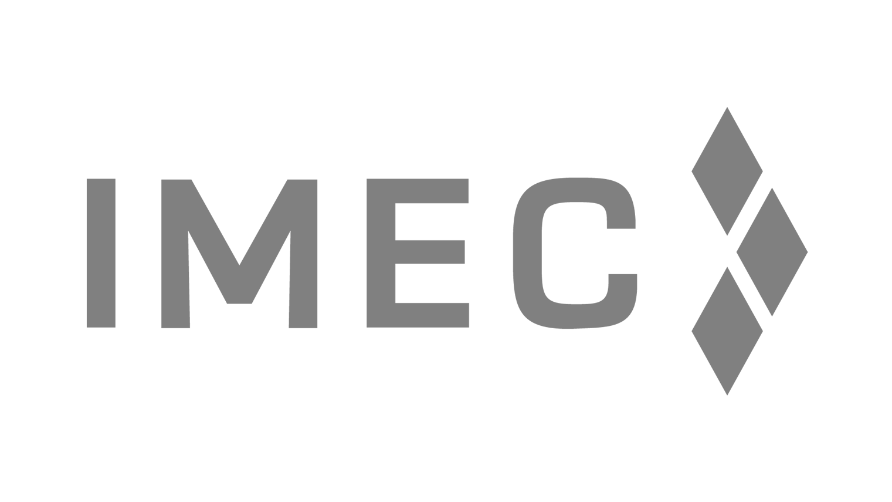
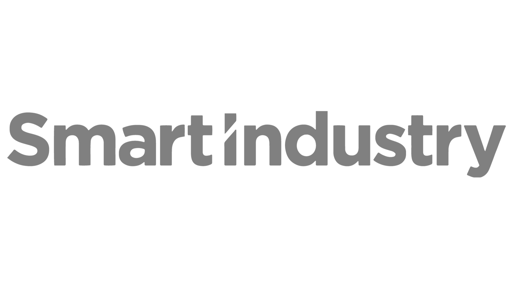

About Mr. IIoT
We don't just talk IIoT. We build it.
Mr. IIoT is an industrial IoT and systems engineering firm. Manufacturers call us when they're growing faster than their systems can keep up. We connect the machines, integrate the software, and automate the busywork, so the team you already have can do more.
Why Mr. IIoT
More than IIoT — a systems engineering partner.
We engineer the whole system
Sensors, protocols, software, dashboards, and the ERP/EDI plumbing behind them — we design and build the entire pipeline, not just one box.
We span IT and OT
25+ years bridging the plant floor and the enterprise — the rare team fluent in both controls and code.
We're vendor-neutral
Open standards, JSON and MQTT, no lock-in. Your data is yours, and you can change platforms without breaking connectivity.
We're open by reputation
Manufacturers find us through our open-source work on GitHub and stay for the depth behind it.
We solve, not sell
"Experts who are here to help us solve a problem, not just to sell a product." We embed with your team and get it done.
We speak every machine
Fanuc, Haas, Siemens, Yaskawa, PLCs, robots, CNCs, databases — 50+ protocols, normalized into one coherent picture.
The founder
Chris Misztur, President & Founder
Mr. IIoT is led by Chris Misztur, who brings 25+ years of industrial IoT and Industry 4.0 experience from the Greater Chicago Area. His philosophy is simple: the policies you set at the boundary, where machines meet information, are what make digital transformation work and let manufacturers truly own their data.
That hands-on, problem-first approach is why clients describe working with Mr. IIoT as gaining "a hired gun": technical expertise that complements their own engineering team.

In their words
Manufacturers who trust us.
“Once we started working with Mr. IIoT, it felt like we had a hired gun.”Automation Engineer · global fluid-systems manufacturer
“I trust Chris and Mr. IIoT's team implicitly.”Rob Wienhoff · President, Chicago Coding Systems
“They didn't just deliver a product but worked closely with us to understand our business.”Director of IT · nationwide baking company
Recognized across the industry


Our products
Four properties, one connected journey.
From a sensor on the floor to AI support after the sale, our products span the whole path from machine signal to confident answer.
SHARC
The universal IoT sensor adapter — get any sensor on any network, published over MQTT.
Connectivity · IntegrationDIME
The universal translator for industrial data — 50+ protocols in, normalized and routed anywhere.
Integrationi3X
Industrial Information Interoperability Exchange — turn any source into a queryable REST API.
SupportTracebook
AI tech support for machine OEMs — cited answers from your manuals, schematics, and tickets.
Work with the IIoT experts.
Bring us your hardest connectivity, data, or integration problem. We've almost certainly solved one like it.